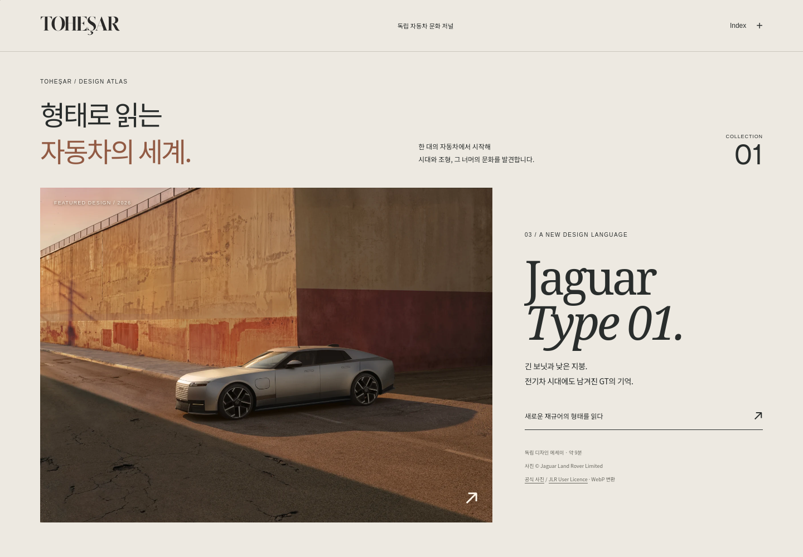

TOHEŞAR / BUILD 007 / DESIGN ATLAS
형태를 이해하는 경험.
아래 이미지는 390 × 844 모바일 뷰포트의 Playwright WebKit 렌더링입니다. 실제 물리 iPhone Safari를 촬영한 결과는 아닙니다.


검증한 동작
Chromium + WebKit 26.5. 새 지면은 320, 390, 430, 844, 1440px 너비에서 확인했습니다. 11개 실제 콘텐츠 검색, 네 가지 분류, 결과 없음, 쿼리 URL·새로고침·뒤로 가기, 정방향·역방향 관찰창, 가로 회전, 동작 줄이기, JavaScript 없는 기사 목록과 직접 링크가 동작합니다.
기존 006 검증도 두 엔진에서 통과했습니다. 911·F40·아틀리에의 정·역방향 모션, 이미지 확대, 뉴스 필터, 공통 메뉴와 히스토리를 유지합니다. 원본 커버·브랜드·미니카·Yokohama 및 기존 모션 자산은 변경하지 않았습니다.
넓은 지면

사진과 자료
Jaguar 사진 © Jaguar Land Rover Limited, JLR User Licence에 따른 독립적 비상업 편집 이용. 이미지 크기 조정·WebP 변환. 원본 사진의 형태를 왜곡하지 않았으며 비교 사진은 동일 축척이 아닙니다. 원문은 기사의 공식 출처 다섯 곳에서 확인할 수 있습니다.
기존 911과 Visual Culture의 사진적 이미지는 AI 보조 비주얼 픽션이며 제조사 사진이나 1963년 실차 사진이 아닙니다. 미니카는 기존 독립 그래픽 작품입니다.
남은 검증 범위: 실제 iPhone 하드웨어, 구형 iOS, 장시간 발열·배터리. 뉴스는 기존 6건의 수동 검증 기록이며 자동 수집 피드가 아닙니다.